OTHA Events
A look at how OTHA educates, serves, fundraises, and reaches communities throughout the year.
Blood Battle · Campus Service
Be a Hero at the Big House
Join OTHA and the University of Michigan community at Michigan Stadium on Sunday, November 1, 2026, from 8:00 a.m. to 5:00 p.m. Participants can donate blood, join the organ donor registry, or join the stem cell registry while experiencing the Jack Roth Stadium Club.
Blood donations count toward the 44th annual Blood Battle competition against Ohio State and the Abbott Big Ten We Give Blood competition. The day also features entertainment, activities, giveaways, and special guests.
OTHA members interested in helping should look out for volunteer sign-up opportunities in our newsletter as details become available.
Location: Michigan Stadium, 1201 S Main St, Ann Arbor, MI 48104
Education
Speaker Events
OTHA hosted a speaker event featuring Rose, a University of Michigan undergraduate and heart transplant recipient, alongside pediatric cardiologists Dr. Kurt Schumacher and Dr. Manny McCormack. Rose shared her experience growing up with a congenital heart defect, undergoing three open-heart surgeries before age two, and later developing protein-losing enteropathy. After spending ten months on the transplant waiting list, she received a heart transplant in December 2018 and is now seven years post-transplant.
The speakers discussed pediatric heart disease and transplantation from both patient and physician perspectives. Their conversation highlighted the medical challenges surrounding transplantation, the long-term relationships between transplant patients and their care teams, and the importance of organ-donation education and advocacy.
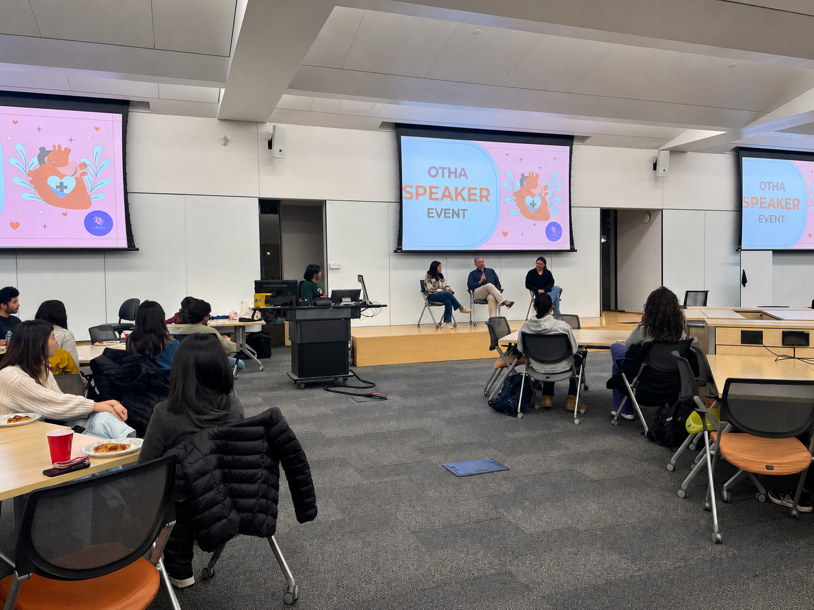
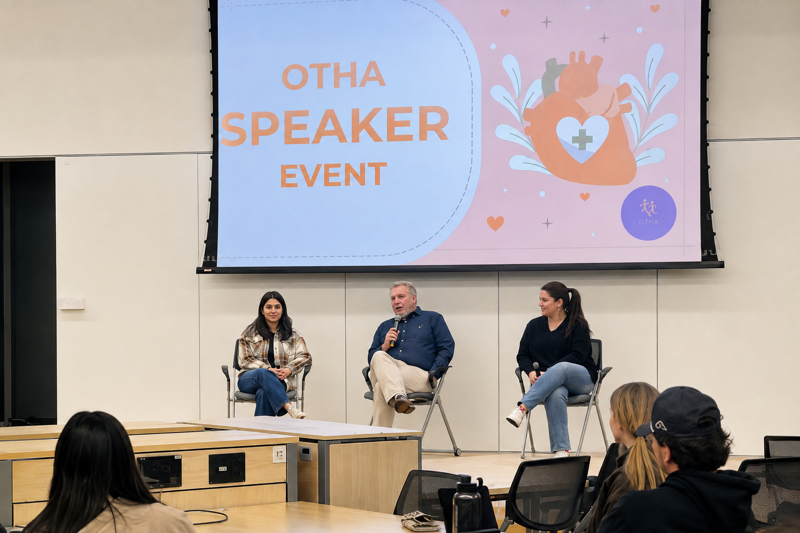
Service
Volunteering
OTHA members support transplant patients through hands-on service projects, including making cards, origami, and handmade organ plushies. These activities give members a creative way to offer encouragement and help brighten patients' hospital stays.
Members also have opportunities to volunteer at hospital blood drives, where they help support donors and the teams coordinating these lifesaving events.
Community focus: Hands-on projects that combine patient support, health awareness, and meaningful service.
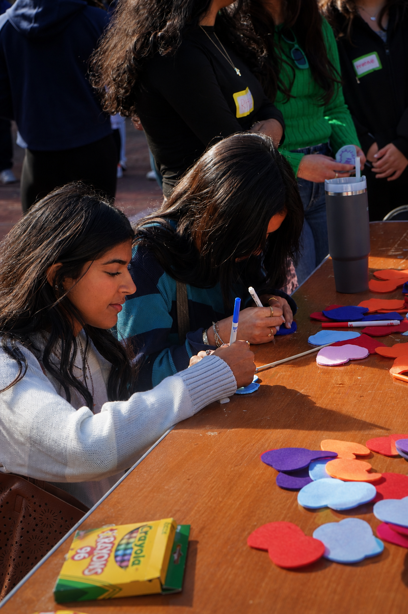
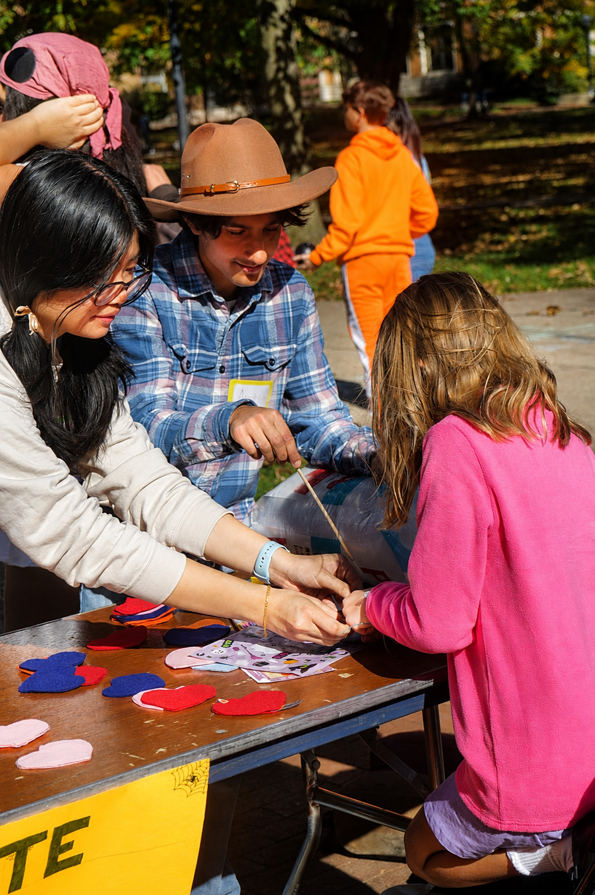
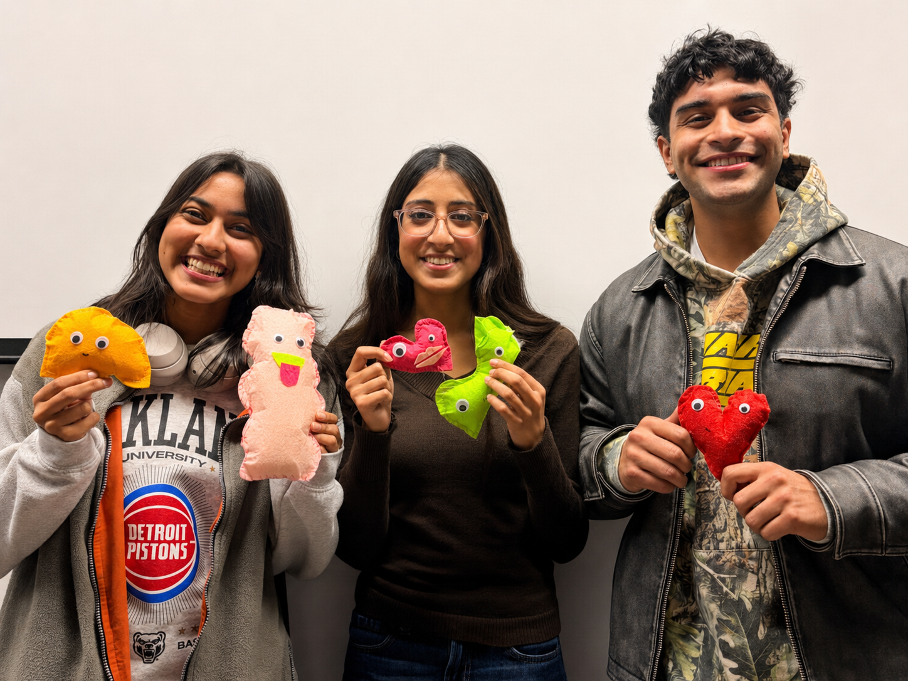
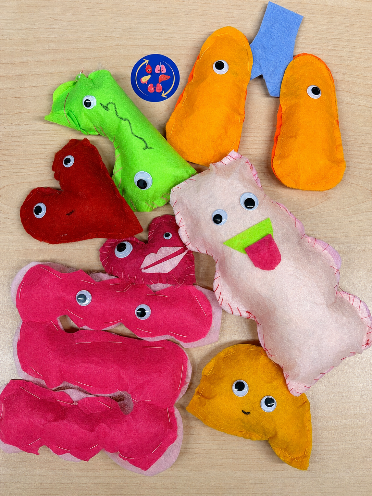
Fundraising
Supporting Camp Michitanki
OTHA fundraises for Camp Michitanki, a summer camp created by the University of Michigan Transplant Center for children ages 8–15 who have received organ transplants. Medical professionals, community volunteers, and camp staff work together to provide a fun and medically supervised camping experience.
Why it matters: Fundraising helps support a welcoming camp experience for pediatric transplant recipients.
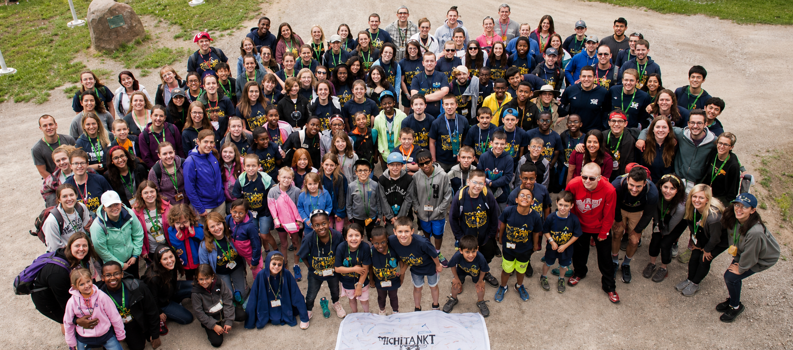
Camp Michitanki brings pediatric transplant recipients together for a medically supported summer camp experience.
Member Education
Education & Member Meetings
Member meetings explore organ transplantation, donation misconceptions, disparities, healthcare ethics, current developments, and ways students can contribute to OTHA's work.
Previous meeting topics have included donation after cardiac death, the journey from donor to recipient, and why someone should become an organ donor.
Member experience: Building a knowledgeable community prepared to educate, advocate, and serve.
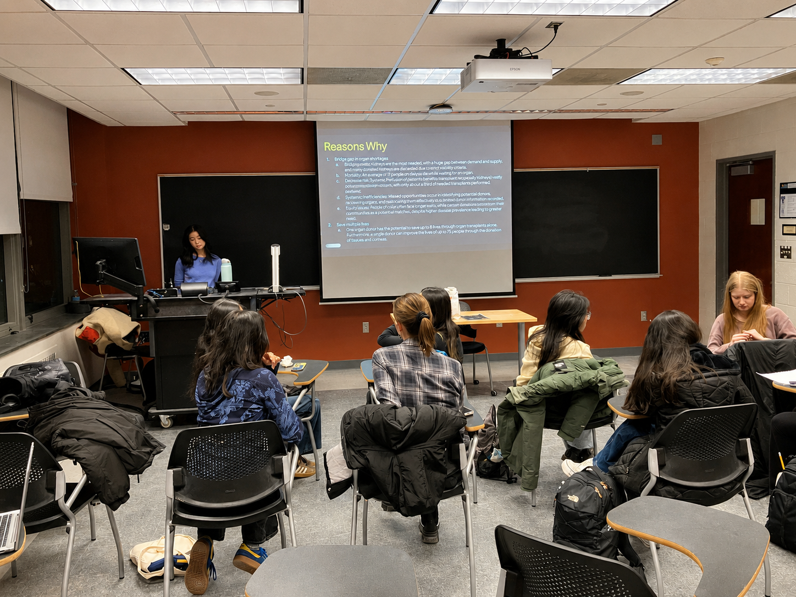
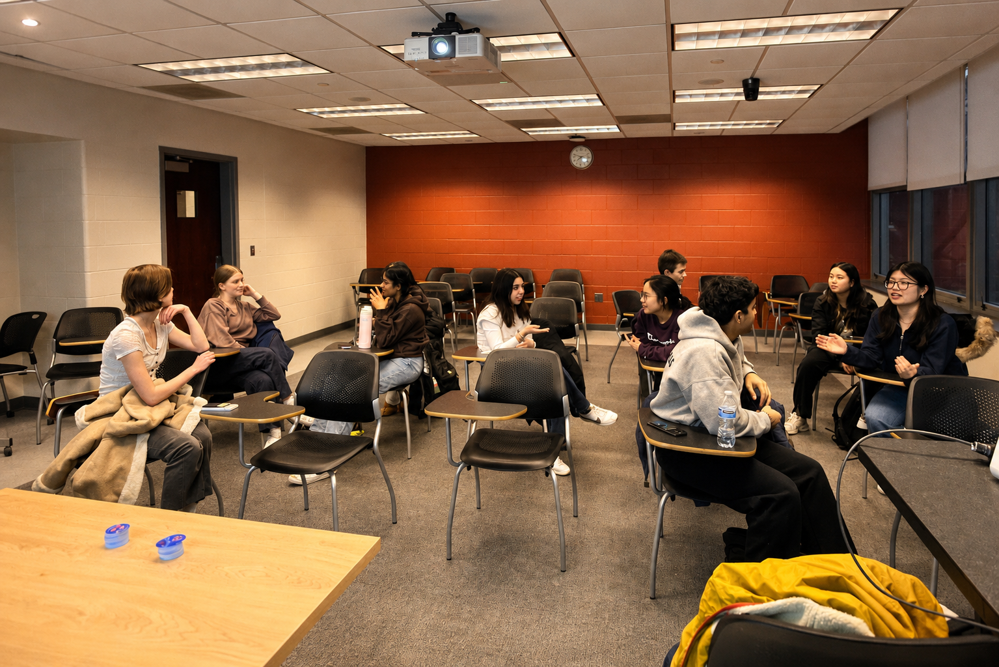
Community Outreach
High School Outreach
OTHA brings organ-donation education beyond campus by speaking with local students, addressing misconceptions, and encouraging thoughtful conversations about organ health and transplantation.
Growing impact: One school visited so far, with room to expand this outreach in future years.
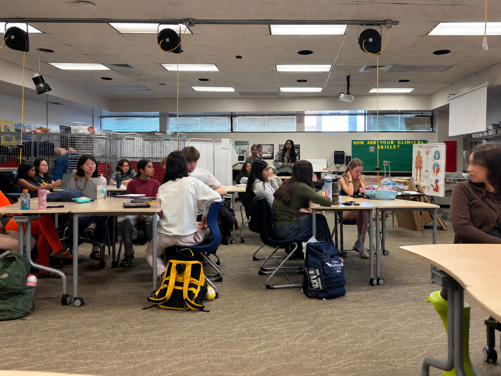
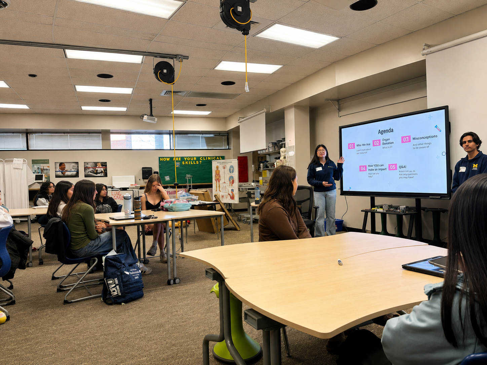